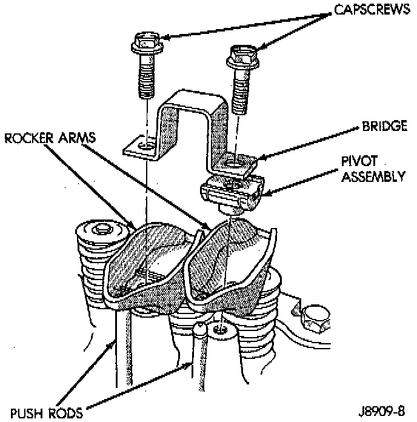

Removal and Installation

NOTE: This procedure can be done with the engine in or out of the vehicle.
REMOVAL
1. Remove the engine cylinder head cover.
2. Remove the capscrews at each bridge and pivot assembly. Alternately loosen the capscrews one turn at a time to avoid damaging the bridges.
3. Check for rocker arm bridges which are causing misalignment of the rocker arm to valve tip area.
4. Remove the bridges, pivots and corresponding pairs of rocker arms. Place them on a bench in the same order as removed.
5. Remove the push rods and place them on a bench in the same order as removed.
INSTALLATION
1. Lubricate the ball ends of the push rods with Mopar Engine Oil Supplement, or equivalent and install push rods in their original locations. Ensure that the bottom end of each push rod is centered in the tappet plunger cap seat.
2. Using Mopar Engine Oil Supplement, or equivalent, lubricate the area of the rocker arm that the pivot contacts. Install rocker arms, pivots and bridge above each cylinder in their originally position.
3. Loosely install the capscrews through each bridge.
4. At each bridge, tighten the capscrews alternately, one turn at a time, to avoid damaging the bridge. Tighten the capscrews to 28 Nm (21 ft. lbs.) torque.
5. Install the engine cylinder head cover.